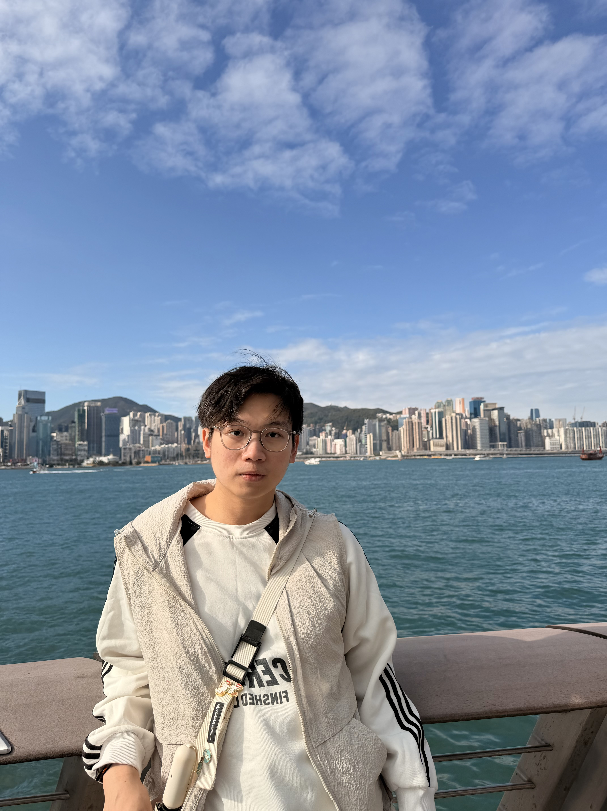

turning visual data into actionable insights with deep learning.
About Me

I am a final-year MSc in Data Science student at Lingnan University (expected graduation July 2026), passionate about building intelligent vision systems that solve real-world problems. My research focuses on video stream monitoring for urban places, and I have hands-on experience in image classification, object detection, and multi-modal regression.
- End-to-end computer vision pipeline design (data processing → model training → deployment)
- Model optimization & loss function engineering (per-class Focal Loss, two-stage training, TTA)
- Cross-functional collaboration & project leadership – from research to measurable outcomes
- Fast learner with a humorous, team-oriented mindset, always eager to explore SOTA techniques
Education: Lingnan University, MSc in Data Science (Sep 2025 – Jul 2026) · Core courses: Deep Learning, Programming for DS, Computer Vision, Statistics for DS.
Skills
💻 Technical
📊 Business
🛠️ Tools
Projects
✔️ Each project includes: Problem, Data, Approach, Outcome/Impact, and clear personal contribution.
Resume / CV
📄 Download my full resume (PDF) or view a short summary below.
⬇️ Download Resume (PDF)Education: MSc in Data Science, Lingnan University (2025–2026, expected July 2026)
Publications & IP: 2 EI-conference papers (image segmentation, data mining), 2 software copyrights, 1 utility patent pending
Certifications: IELTS 6.5, National Computer Rank Exam (Python – Excellent), Alibaba Cloud ACA
Awards: Excellent Student Award, 2× Second-class scholarship, Young-Storm Microsoft Challenge (Southern China 3rd prize)